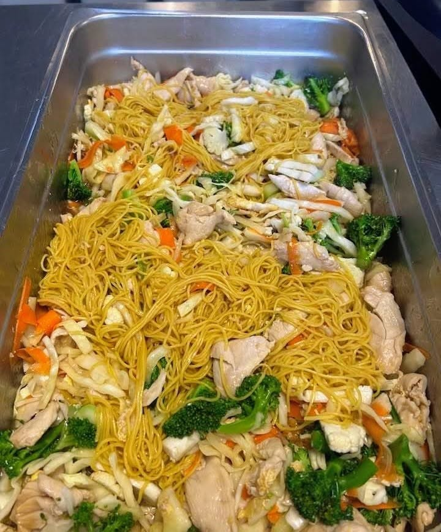
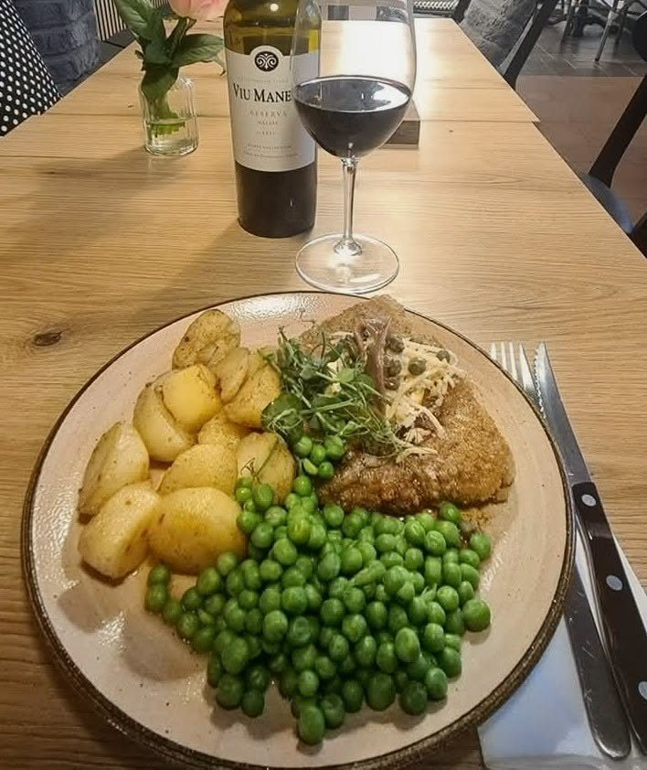

Takeaway fra Jernbanecaféen
Takeaway i Ikast
Jernbanecaféen tilbyder takeaway i Ikast: alt på menukortet kan tages med hjem, både den danske kro-mad og Rapheephons thai. Ring, bestil, og hent på stationen ved Lille Torv.

1
Ring til os
30 80 72 41. Sig hvad du vil have fra kortet, dansk eller thai.
2
Vi laver maden
Alt laves fra bunden i køkkenet på stationen.
3
Hent på stationen
Lille Torv 3, lige ved togbanen. Maden er klar til at tage med hjem.
Populært at tage med
Hele menukortet kan bestilles som takeaway. Har du allergi, siger du bare til. Vi tilpasser gerne retterne.

Dagens ret kan også tages med
Spørgsmål og svar
Har Jernbanecaféen takeaway?
Ja. Hele menukortet, både dansk kro-mad og thai, kan bestilles som takeaway på 30 80 72 41 og hentes på Lille Torv 3 i Ikast.
Hvad koster dagens ret?
Dagens ret koster 135 kr. Retten skifter løbende, følg med på Dagens ret eller Facebook.
Skal man bestille bord?
Nej. Kom bare forbi, vi finder en plads.
Hvornår har I åbent?
Onsdag 16–20, torsdag–lørdag 12–20, søndag 12–19. Mandag og tirsdag lukket.
Kan I tage hensyn til allergi?
Ja, sig til når du bestiller, så tilpasser vi retten.
Ring gerne en halv time før, du vil hente, så står maden klar. Ved større bestillinger er det en god idé at ringe dagen før. Vi pakker sovs og tilbehør for sig, og du kan betale med kort og MobilePay i caféen.
Sulten i aften?
Tors–lør 12–20 · Søn 12–19 · Ons 16–20